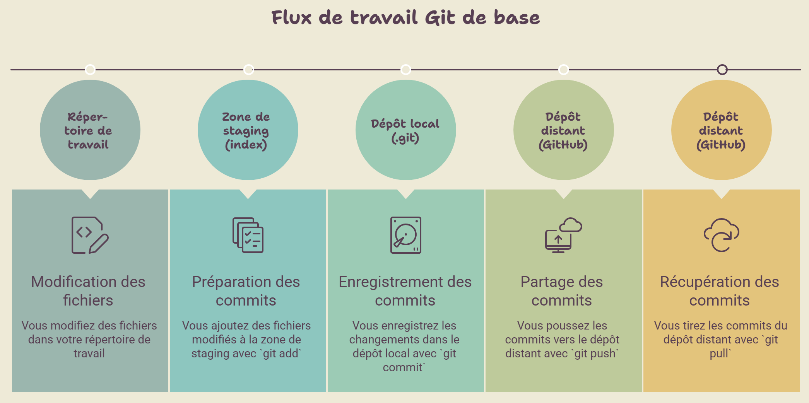
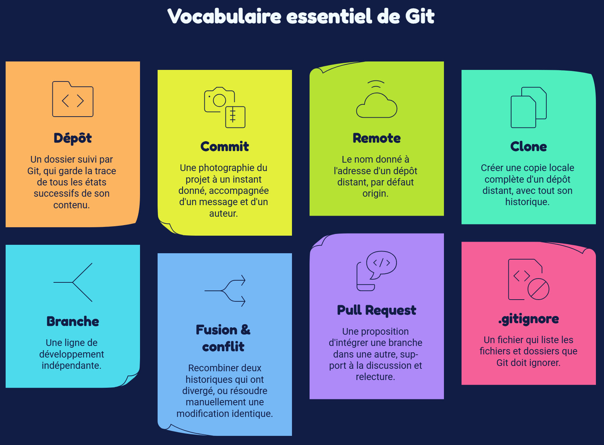

Avant de manipuler
Les quatre zones et le vocabulaire de base
Comprendre où vit un fichier à chaque instant permet de dédramatiser la plupart des messages d'erreur de Git.

Vocabulaire essentiel

Cliquez sur une vignette pour en lire la définition.
Dépôt (repository)
Un dossier suivi par Git, qui garde la trace de tous les états successifs de son contenu. Un dépôt local vit sur votre poste ; un dépôt distant (souvent sur GitHub) permet de le partager.
Commit
Une photographie du projet à un instant donné, accompagnée d'un message et d'un auteur. Un commit ne modifie jamais le passé : il s'ajoute à l'historique.
Remote
Le nom donné à l'adresse d'un dépôt distant, par défaut
origin. C'est vers lui que l'on pousse
(push) et depuis lui que l'on récupère
(pull).
Clone
Créer une copie locale complète d'un dépôt distant, avec tout son historique. Chaque étudiant·e du binôme clone le même dépôt, chacun dans son propre dossier.
Branche
Une ligne de développement indépendante. La branche
main représente en général la version « officielle » du
projet ; une branche feature/... isole un travail en
cours avant de le proposer à la relecture.
Fusion (merge) & conflit
Fusionner, c'est recombiner deux historiques qui ont divergé. Quand la même ligne a été modifiée différemment des deux côtés, Git ne peut pas décider seul : c'est un conflit, à résoudre manuellement.
Pull Request (PR)
Une proposition d'intégrer une branche dans une autre (souvent vers
main), qui sert de support à la discussion et à la
relecture de code avant la fusion.
.gitignore
Un fichier qui liste les fichiers et dossiers que Git doit ignorer (fichiers temporaires, dossiers de dépendances, fichiers spécifiques à une machine…).
Pourquoi ça grince parfois ?
La quasi-totalité des messages d'erreur de Git viennent d'une seule cause : votre dépôt local n'est plus synchronisé avec le dépôt distant. Le réflexe à acquérir pendant ce TP : on pull avant de commencer à travailler, et on pull avant de push si le push est rejeté. Le reste - conflits, branches, Pull Requests - n'est que la suite logique de cette seule idée.